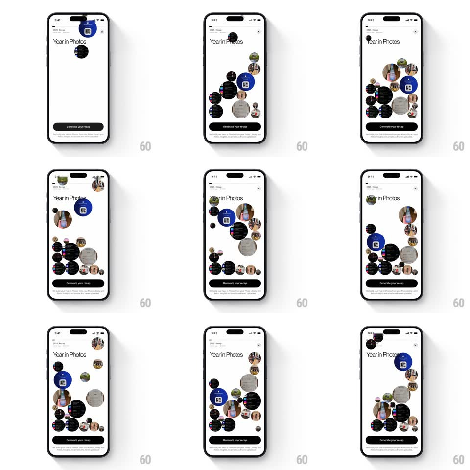

Media
Frame-by-frame

Rebuild this interaction 1:1: Retro's Year in Photos - photo bubbles drop into the sheet with physics, pile up at the bottom, and roll around as you tilt the phone, above the "Generate your recap" button.

Rebuild this interaction 1:1: Retro's Year in Photos - photo bubbles drop into the sheet with physics, pile up at the bottom, and roll around as you tilt the phone, above the "Generate your recap" button. ## Integration Integration: stack-agnostic spec - springs given as stiffness/damping, timed motions as duration + curve; map every value to your framework and animation library of choice. ## Scene A "Year in Photos" sheet over the Retro profile: the title top-left, a close X, a white field where circular photo bubbles (your year's photos, mixed sizes, a few blue app-icon tiles among them) collect, and a black "Generate your recap" button pinned at the bottom with small print beneath. ## Motion spec Pattern: physics bubble drop into a gyroscope-steered photo pile. - Bubbles spawn at the top edge one at a time (~120ms apart) and fall as real physics bodies - gravity, slight initial horizontal jitter, and bouncy collisions (restitution ~0.5) with the walls, the floor, and each other. - Each bubble settles into the pile with a soft squash (scaleY 0.92 for 120ms) on its last bounce - the pile stacks organically, never gridded. - Once dropped, the pile stays live: tilting the phone shifts gravity, and the bubbles roll, lean, and resettle in the tilt direction - gyroscope-driven, continuous. - A gentle device shake stirs the pile (impulse to all bodies, they hop and resettle). - The title, X, and Generate button stay pinned - only the bubble field is physical. ## Calibration - Bubbles keep their photos upright as they roll (counter-rotate to the body rotation) - faces shouldn't tumble. - The pile must feel like marbles in a bowl: heavy, round, and cooperative - no floating, no sticking to walls. ## Reduced motion Bubbles fade into a settled pile (400ms); no tilt response. ## Don't miss - The pile builds before your eyes - generating the recap is offered only after the year has physically accumulated. - Mixed bubble sizes (small to large) make the pile read as a year of moments, not a uniform grid.